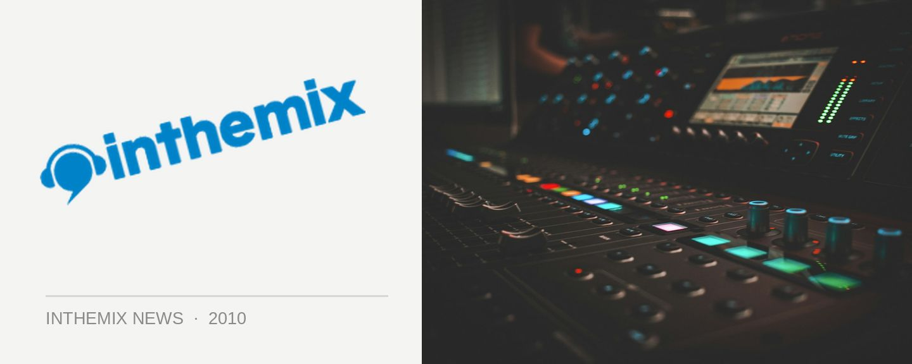

Stephan Bodzin boots up his gear and heads back to Australia
July may seem like a long way away, but if you’re a fan of cutting-edge live electronic music then it’ll be worth the wait. German techno star Stephan Bodzin has confirmed he’ll be heading back to Australia in the middle of the year for a club tour for The Likes of You. Touring under the banner ‘re_lived’, it’s looking like a sure thing that he’ll be carting over all his live equipment with him.
Last here performing in the Likes of You tent at Future Music Festival last year, Bodzin is known as one of the performers who’s pushing the boundaries of what can be done with electronic live performances. His trademark is the visual screen set up behind him that allows him to show in real time what he’s getting up to behind the machinery.
What new tricks will Bodzin have up his sleeve in 2010? We await the July tour with baited breathe.
Stephan Bodzin club tour:
2nd July – The Likes Of You, Melbourne
3rd July – The Likes Of You, Sydney
9th July – The Likes Of You, Brisbane
10th Jul – The Likes Of You, Perth
Check out ITM’s interview with Mr Bodzin from last year’s Future Music Festival tour: